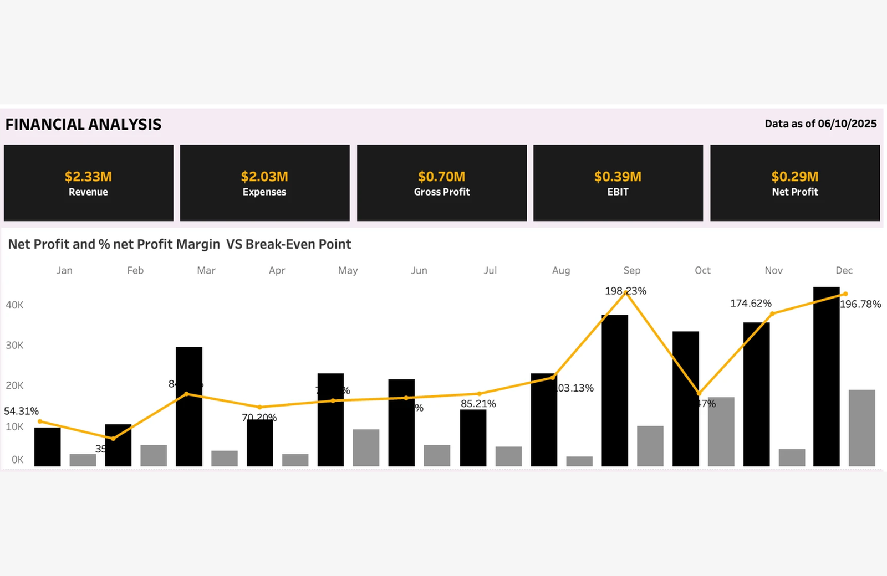
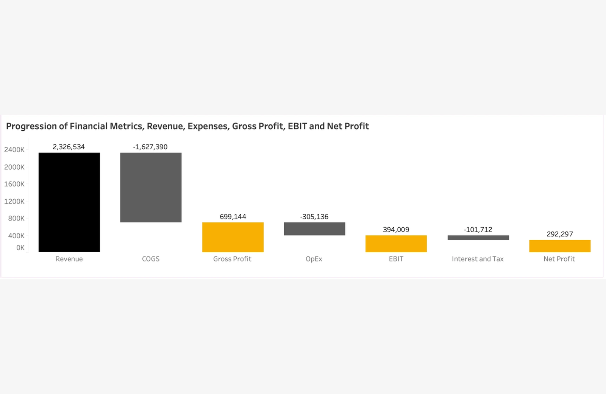

Financial analytics · Tableau
YellowJacket Financial Analysis



Overview
A Tableau dashboard that follows every dollar from revenue to net profit. Leadership sees the year's KPIs at a glance, how each month performs against the break-even point, and exactly where margin is lost between the top line and the bottom line. Six pages, from Overview, Revenue, Expenses and Ratios to a detailed Table and a Glossary, let finance and non-finance readers go as deep as they need.
Key metrics
Methodology
Data Preparation
Structured monthly revenue, cost of goods, operating expenses, interest and tax into one consistent financial table, with a single date field driving every view.
Analytical Approach
Calculated fields for gross profit, EBIT, net profit and margins, plus a monthly comparison against break-even, so every KPI traces back to the same logic.
Visual Design
A black, gray and amber palette: KPI tiles up top, monthly net profit against break-even, and a waterfall that walks revenue down to net profit. Side navigation keeps six pages one click apart.
Dashboard views
Key findings
- 1
Cost of goods takes 70% of revenue ($1.63M of $2.33M), leaving a 30% gross margin. It is the single biggest lever on profit.
- 2
Operating expenses ($305K) and interest and tax ($102K) take another 17.5% of revenue, so 12.6%, or $292K, reaches net profit.
- 3
Profit is back-loaded: September to December were the four strongest months of the year, and December delivered the highest net profit.
- 4
January and February were the weakest months, earning only a fraction of what the fourth quarter did.
Recommendations
Start with cost of goods: every percentage point saved there adds about $23K to net profit.
Plan cash, stock and staffing around the fourth-quarter peak, and use the slower first quarter for cost and supplier reviews.
Track net margin monthly against the 12.6% annual figure to catch slipping months before they reach the year-end numbers.
Want the full walkthrough?
Talk me through it